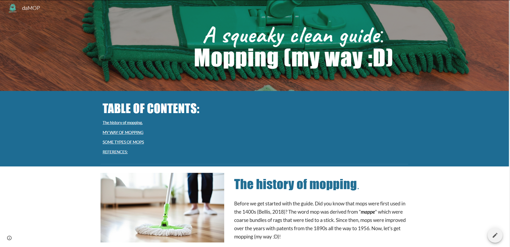

ABOUT ME
Good day to you! I am Karrl, a Sophomore BAMS student here at UPOU (University of the Philippines-Open University) and have lived and stayed at Bay, Laguna for as long as I can remember. I enjoy exploring new things that can sharpen my skills and satiate my curiosity!
THINGS I LOVE
- Video Games
- Music/Instruments
- Cooking
- Films/TV Shows
- My Pets
- Traveling
PASSION PROJECTS
Website Making (Via Google Sites)

In this side project that I made a year ago, I discussed how to mop floors and different kinds of mops that people can use.
Click here to see the website!CONTACT
Email: kladriano2@up.edu.ph
Facebook: Karrl Adriano
Instagram: ka_ndela